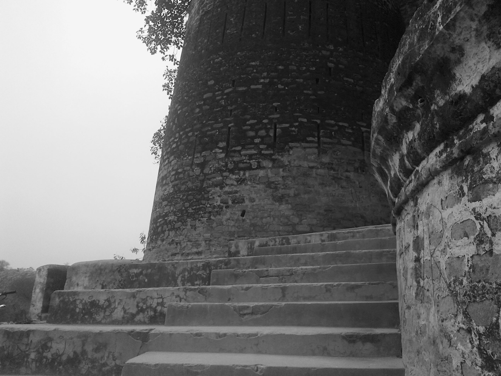
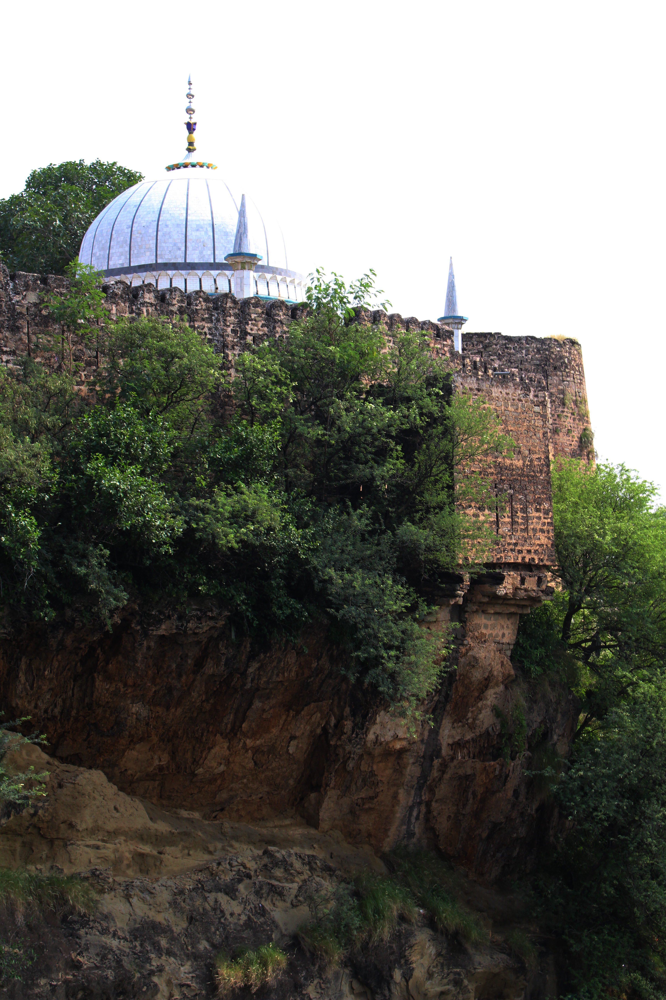

This encyclopedia is free for everyone. If it brought value to you, please consider supporting the research behind it.

While exploring Sangni Fort, Pakistan — A Forgotten Hilltop Fortress of Pothohar, you may also enjoy reading Lahore Fort, Pakistan — The Citadel of the Mughal Empire | UNESCO World Heritage, which expands the historical narrative and connects related civilizations and archaeological discoveries.
